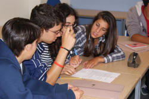

TKT Module 1: Background to language learning
Exposure to language and focus on form

 |
How do we learn another language? |
The short answer is that nobody really knows. There are, however, some good theories.
 |
Key concepts in this guideBy the end of this guide, you should be able to understand and use these key concepts: |
Look out for these words like this
in the text.
There will be tests at the end of the guide for you to check that
you understand the ideas.
There is a guide on this site which will tell you more about how the history of methodology and learning theories are connected. Here we will only discuss what you need for TKT.
 |
4 different approaches |
Read these statements from learners of English and think about the different ways they think learning happens.
 Mary |
I need to
focus on the grammar and vocabulary of the language and do
lots of exercises in the classroom and at home. All languages are just structure plus words and I need to learn how to put them together. |
 Brad |
Learning
grammar and words doesn't help me. I learnt English by watching lots of English-language TV programmes, reading magazines and just listening to English people talking. As long as the language isn't too difficult and I can understand, I pick up new structures and vocabulary easily. |
 Sharma |
I'm very
sociable and I enjoy communicating with people in English.
I don't always get it right, of course, but I can get my
message across and the harder I try to communicate, the
better I get. I only look at a grammar book after I have tried everything else! |
 Verity Verity |
I learn in
all sorts of ways. I look at grammar books and do exercises and I also talk and listen as much as I can in English. When I hear English spoken or read something, I deliberately try to see how what people say or what people write is different from what I say and write. That way, I can get better and better. |
 |
Task 1:
Can you match the description of learning theory to the
pictures? Click on the |
| Learning theory | Learner |
|
Structural approach The theory is that we need deliberately to learn grammar and structure before we can communicate accurately what we want to say. Most schools around the world take this approach to learning a language and many on-line courses do the same. |
Mary: "I need to focus on the grammar and vocabulary of the language" |
|
Communicative approach The theory is that we learn through the effort of trying to communicate. Communication is the goal of teaching and any structural work is a support for that, not an end in itself. Some people take the view that just trying to communicate will work and we don't need to focus on structure at all. |
Sharma: "I can get my message across and the harder I try to communicate, the better I get" |
| Acquisition
theory The theory is that we can learn a second language in a similar way to our first language. We don't consciously learn but providing the input is understood and only a little above our level, we can pick up the language rather than learn the language. This is acquisition vs. learning theory. |
Brad: "I learnt English by watching lots of English-language TV programmes, reading magazines and just listening to English people talking." |
| Noticing The theory is that learners need to notice the way their own language is different from what they hear and read (noticing the gap) and also actively focus on the language they hear (noticing the language) so they can say "Ah, I see, that's how it works in English". |
Verity: "When I hear English spoken or read something, I deliberately try to see how what people say or what people write is different from what I say and write." |
 |
So which one is right? |
Nobody really knows but it seems quite likely that they all are
(or none of them is).
People are complicated and we learn in complicated ways. The
truth probably is that we all use all these ways of learning a
language.
|  |
Classroom implications |
|
|
Task 2:
Take each of the theories and try to think what it means for
the classroom. When you have an
answer, click on the
|
| Learning theory | Learner |
|
Structural approach |
If this is the right approach to learning, we are going
to spend a lot of time in the classroom doing grammar
exercises. As a structural syllabus is the way
most coursebooks are organised, this will flow
naturally. Many learners find explicit focus on
form both helpful and familiar.
For more, go to the guide to teaching grammar. |
|
Communicative approach |
If the theory is right, the struggle to communicate is a positive learning
experience.
Giving learners the opportunity to communicate as far as possible with language they already know before providing more help and teaching new structures and lexis will be useful, especially if they then get the chance to try again and are more successful. For more, go to the guide to teaching functional language. |
| Acquisition
theory |
If this is right, learners need continual and repeated
exposure to as much language as possible which is just
above their current level. They can get this if
the teacher selects texts for reading and listening /
watching with care and sensitivity.
For more, go to the guide to Krashen and the Natural Approach. |
| Noticing |
This will not always come naturally but teachers can
help if they highlight language and ways of expressing
things in the classroom and encourage learners to focus
on how they say something and how native speakers might
express it.
For more, go to the guide to noticing. |
 |
Self-test questions |
Before you go on, make sure you can answer these questions. If you can't, go back to the sections which give you trouble.
If you are happy with your progress, go on.
 |
Tests and practice for TKT |
| Test 1 | A short matching task |
| Test 2 | A 10-item, multiple-choice test |
Return to the Module 1 index:

or go on to the next
guide which is to the role of error.